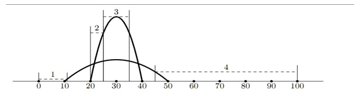

所有输入均为整数
第一行 N
接下来N行 每行p, x, y 表示抛物线左边界的x坐标，顶点的x y坐标
接下来 M
接下来M行 每行i, j, l, r如题意所示
给N个抛物线(只会完整地存在在第一象限，不在第一象限的部分不需考虑， 如图)
询问M次 每次询问第i到第j个抛物线在[l, r]的x坐标区间上的最小值

2
10 30 10
20 30 30
4
1 2 0 11
1 2 20 25
1 2 25 35
1 2 45 100
0.975
22.5
30.0
4.375
1 ≤ n ≤ 50 000
0 ≤ p < x ≤ 50 000,
0 < y ≤ 50
1 ≤ m ≤ 20 000
0 ≤ l ≤ r ≤ 50 000
1 ≤ a ≤ b ≤ n